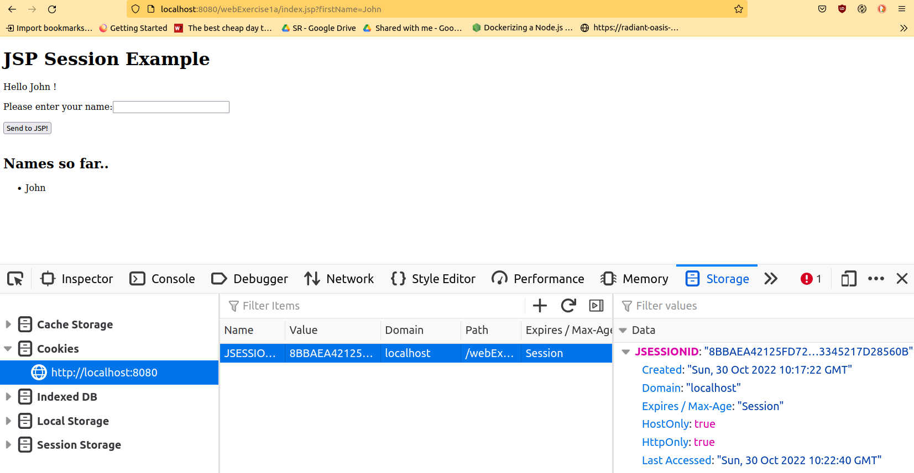
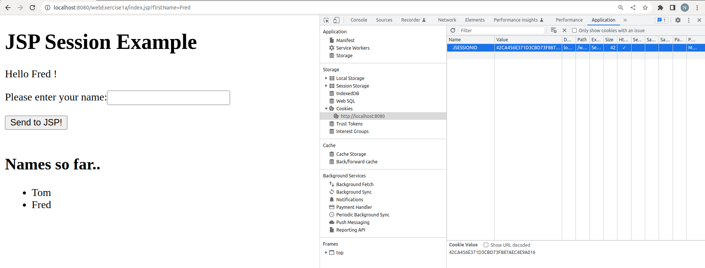

Today we will take a look at session variables and how we can use them in JSP. We will also look at using hidden fields to pass information from page to page. Before we do this, however, we will quickly recap on the exercise from last week.
Before we begin the new material from last week, I want to make one or two points which might be helpful for completing last week's exercise. Remember that your original Student class from weeks 1-3 had a printDetails() method, which displayed the details on the console (with System.out.println()). However this is of little use in JSP. With JSP, we output to an HTML page, not to the console, so any System.out.println() statements will be lost.
It is much better to return the information with a toString() method, e.g:
public class Student
{
public String toString()
{
return "Name " + name + " Course " + course + " Mark " + mark + " Grade " + this.getGrade();
}
}
This can be used by both a console-mode program and a JSP, because each can call the method and output the return value in its own way. Importantly, the toString() method determines how an object is displayed if we try to print it. So for a console application we could do this to display a student, where student is a Student object:
System.out.println(student);while in JSP we could do:
<%=student %>
Similarly, the Student's getMark() method should return a boolean, rather than outputting a message to the console. Once again, both a console-mode application and a JSP could both call getMark() and handle the boolean return value in their own way.
This is an example of the concept of separation of concerns: splitting our program into different components to handle different aspects of the system. Our data classes (such as Student) should focus on the data alone, and not focus on input or output. Other classes (such as a class with a main() for a console application, or a JSP) should focus on the input and output. By doing so, the data classes become reusable in different types of application.
Before looking at session variables, we will quickly take a look at cookies. You may have come across cookies before: they are data saved on your machine by a website when you visit it. They are stored in an area of your machine known as the cookie jar and are sent to your browser embedded within the HTTP response. Next time you visit the site, the cookie is sent back to the site via the HTTP request, and thus the site can "remember" data saved by it at the time of the last visit. Cookies can be used for various things, both benign and controversial. For example:
Consequently a user needs to be careful with cookies. It is now law that a site which uses cookies for non-essential purposes must allow the user to turn such cookies off, and this functionality must be clearly visible to the user.
The diagram below shows how cookies work:
Having looked briefly at cookies, we will now start to look at session variables.

JSESSIONIDYou can view session cookies in the browser. To view your cookies, open up the Developer Tools (More Tools > Developer Tools) and then:
JSESSIONID associated with localhost:8080 if you are currently using a JSP application making use of sessions. You can delete this cookie in the browser to prove that session data is related to the session ID.


Most server-side technologies can use session variables. In JSP, it's quite easy, you can simply use the session object. This is a "global" object, of class HttpSession, which can be accessed anywhere within the JSP page. It can store a series of key-value pairs representing multiple items of data, with each key representing each item of data. Here is a simple example of setting two items of data within the session:
session.setAttribute("username", "fred");
session.setAttribute("shoppingCart", new ArrayList<Product>() );
Here, we are setting two separate session variables, one with the key username, containing a username, and another with the key shoppingCart, containing an array list of Products.
The previous section showed how to set a session variable. How can we read an existing session variable? We just use the getAttribute() method of the session. For example:
String uName = session.getAttribute("username");
or:
ArrayList<Product> products = (ArrayList<Product>)session.getAttribute("shoppingCart");
These two examples will read a session variable, using its key, into a regular variable (uName or products). The second example is interesting. Note the highlighted code:
ArrayList<Product> products = (ArrayList<Product>)session.getAttribute("shoppingCart");
This operation is called a type cast. The issue is that sessions can store data of any type. To allow this, the return type of getAttribute() is Object, which is the superclass of all other classes (all classes automatically inherit from Object). However in our case, the shoppingCart session is an ArrayList. We know this, but the compiler does not. So we have to tell the compiler that, in this case, the session variable will be an ArrayList of Product objects, and we do that by type-casting the return value to ArrayList<Product>.
Here is a full example (an extension of the self-submitting form example from last week) which makes use of sessions, showing the typical logic which needs to be implemented. It is a JSP application which allows the user to enter a name (as we did last week) but then stores the name in an ArrayList of all names entered so far, using a session. So when the page is reloaded, the list of names will be remembered.
<%
// Does the session variable "names" exist? If not, create it and set it to an empty array list.
if(session.getAttribute("names") == null)
{
session.setAttribute("names", new ArrayList<String>());
}
// Make an alias of the session variable, using a regular variable called "sessionNames"
ArrayList<String> sessionNames = (ArrayList<String>) session.getAttribute("names");
// Read in the parameter from the form
String fName = request.getParameter("firstName");
// Was a parameter submitted? If so, the parameter will be non-null
if (fName != null)
{
// Add the name to the list of names
sessionNames.add(fName);
}
// In this example, we ALWAYS display the form, whether the parameter was
// submitted or not
%>
<!-- an empty action means we send the data to the current JSP -->
<form action="" method="get">
<p>Please enter your name:
<input type="text" name="firstName" value="" />
<input type="submit" value="Send to JSP!" />
</form>
<br />
<h2>Names so far..</h2>
<%
// Loop through all the names in the array list
for(String currentName: sessionNames)
{
%>
<%=currentName%><br />
<%
}
%>
This is an extension of the self-submitting form example from last week. We first of all initialise the session variable names to an empty ArrayList if we need to, i.e if the session variable is currently null. We then make an alias of the session variable (
With session variables, we can preserve data (such as a username, or a shopping cart) from page to page. A related pattern in web applications, also involving passing information from page to page, is the need to pass single items of data, often chosen by the user (such as the unique ID of a product) from one page to the next. For example, imagine a shopping cart application in which the user does a search for products, and then can select one product from the list to buy, using a "Add to Cart" button beside each product. When the user clicks "Add to Cart", they should be taken to another JSP page which actually adds the product to their cart. This second JSP page would need to know the product ID, in order to add the correct product to the cart. But the question is: how do we pass the product ID through to the next page?
We can use a hidden form field to do this. A hidden field is like a regular form field, but cannot be viewed, or changed, by the user.
The example below gives an idea how this could be done. Note, for simplicity, that the products are hard-coded (normally they would be read from a database).
<%
ArrayList<Product> products = new ArrayList<>();
// Each product has an ID, name price and quantity
// In a real application, these would be taken from a database
Product p1 = new Product(1, "Cheese", 2.05, 20);
Product p2 = new Product(2, "Milk", 0.55, 30);
Product p3 = new Product(3, "Chocolate", 0.79, 40);
products.add(p1);
products.add(p2);
products.add(p3);
// Loop through each product, and write out a form for each, allowing the user
// to add that product to their cart, and containing the product ID as a hidden field.
for(Product p: products)
{
%>
<form action="addToCart.jsp" method="post">
Quantity needed: <input type="text" name="quantity" />
<input type="hidden" name="productID" value="<%=p.getId()%>" />
<input type="submit" value="Add to Cart!" />
</form>
<%
}
%>
Note how the code loops through the products, and creates a form for each, allowing the user to buy a specific quantity of the current product. The form for each product passes through the product ID (p.getId()) to the addToCart.jsp page along with the desired quantity.
ArrayList of student objects as a session. Add each student object that you create to this ArrayList, so that the students are remembered even if the page is reloaded. On your JSP, display a list of student names added so far. (You should only display the names, using each student object's getName() method).ArrayList in the session.University object as a session variable, rather than an ArrayList of students. You will need to add a getAllStudents() method to the university in order to do this.